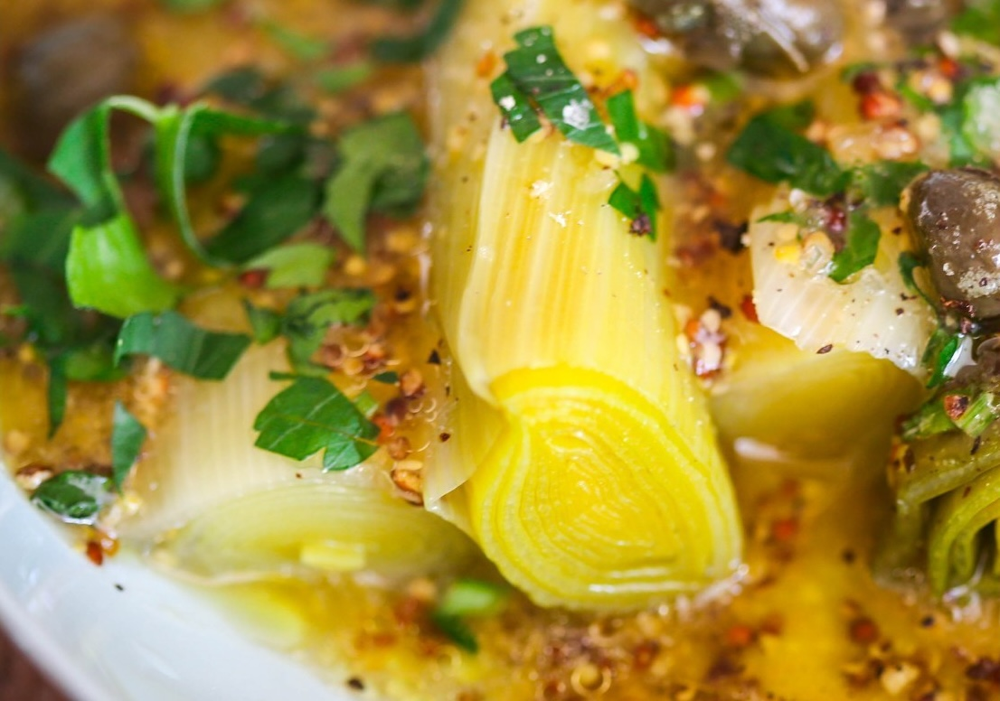

Когда я училась в университете в Англии и жила в общежитии, один мой сосед-англичанин очень интересно готовил порей. Это было мое первое тесное с ним столкновение — с пореем, а не с англичанином. Я впервые узнала, что порей — это не просто съедобно, но еще и вкусно. Он его нарезал кружочками, томил в масле, а в конце вмешивал хорошо плавящийся сыр типа чеддера. Если положить эту горячую смесь на любой тост из качественного хлеба, получается просто объедение.
Лук-порей — один из многочисленных представителей обширного семейства луковых. От своего родственника репчатого лука он отличается почти полным отсутствием горечи и нежным вкусом. Поэтому порей можно добавлять, например, в салаты в свежем виде. Но особенно он хорош, если его тушить или запекать, тогда в нем раскрывается скрытая глубоко внутри сладость, а еще он становится невероятно нежным и на вкус чем-то напоминает деликатесную спаржу. Лук-порей особенно ценится во французской кухне, где его добавляют в различные запеканки с сыром и рагу, в начинку кишей, а также неизменно используют в супах. Кстати, если готовить классический французский луковый суп с пореем вместо репчатого лука (или взять пополам репчатый лук и порей), вкус блюда будет намного нежнее. Еще один эффектный способ приготовить порей — нафаршировать его. Для этого нужна определенная сноровка, ведь нужно аккуратно разобрать бланшированные пару минут и остуженные длинные отрезки стебля порея на отдельные слои-трубочки, а затем начинить эти трубочки любым фаршем (мясным, из птицы, рыбы или овощей, сливочного сыра или круп) и запечь в соусе, сливочном или томатном, посыпав ближе к концу запекания тертым сыром, — получается необычное, эффектное и очень аппетитное блюдо.
Имейте в виду, что лук-порей требует особой обработки перед готовкой, потому что между его слоями в верхней части стебля и в основании листьев всегда скапливается грязь. Поэтому сначала отрежьте темно-зеленые листья и промойте их, особенно тщательно у основания (о том, что с ним делать, я напишу ниже). Белую часть разрежьте вдоль пополам и хорошо промойте под струей холодной воды, слегка разбирая слои руками, чтобы вымыть грязь. Делюсь своим любимым и простым рецептом приготовления лука-порея: взять только белую часть лука-порея (зеленую сохранить для бульона), разрезать вдоль пополам и хорошо промыть под холодной проточной водой. Сложить в кастрюлю, залить водой и на слабом огне варить около 20 минут или чуть дольше, до мягкости. Сделать к порею заправку винегрет — классическую или с добавлением меда (рецепты были в июльском клубе; кстати, вы можете приобрести конспекты клуба за прошедшие месяцы в любое время). Полить заправкой, посыпать каперсами для пикантности. Если хотите сделать блюдо вкуснее и сытнее, можно отварить несколько яиц вкрутую, очистить и натереть или мелко порубить и посыпать порей перед каперсами.
Джулия Чайлд в своем главном труде о французской кулинарии предлагает готовить порей аналогичным образом: сложить промытые кусочки белой части порея в форму в 2–3 слоя, влить столько воды, чтобы она дошла до 2/3 высоты порея, добавить побольше сливочного масла (это же Джулия Чайлд!), посолить и тушить, неплотно накрыв крышкой для выхода пара, до мягкости, 30–40 минут. Перед подачей выложить тушеный порей на жаропрочное блюдо, полить оставшимися соками из формы и запечь в духовке при 160 °С в течение примерно 25 минут, до золотистой корочки (можно дополнительно, когда порей слегка подрумянится, посыпать его тертым сыром или смесью сыра с хлебными крошками). Джулия Чайлд в своем главном труде о французской кулинарии предлагает готовить порей аналогичным образом: сложить промытые кусочки белой части порея в форму в 2–3 слоя, влить столько воды, чтобы она дошла до 2/3 высоты порея, добавить побольше сливочного масла (это же Джулия Чайлд!), посолить и тушить, неплотно накрыв крышкой для выхода пара, до мягкости, 30–40 минут. Перед подачей выложить тушеный порей на жаропрочное блюдо, полить оставшимися соками из формы и запечь в духовке при 160 °С в течение примерно 25 минут, до золотистой корочки (можно дополнительно, когда порей слегка подрумянится, посыпать его тертым сыром или смесью сыра с хлебными крошками). А вот и рецепт от «кулинарной звезды» этого месяца — Найджела Слейтера. Он рекомендует приготовить из лука- порея и картофеля простой согревающий осеннее-зимний суп, попутно пустив в дело подсохшие корочки пармезана: взять три белых стебля порея, нарезать кольцами, промыть, размягчить в кастрюле на сливочном масле в течение 20 минут. Затем добавить три крупно нарезанные картофелины, потушить пять минут и залить 1,5 литрами воды или овощного бульона, добавив горсть сырных корочек. Посолить, поперчить и варить на слабом огне минут 40, в конце корочки удалить, сняв с них остатки сыра в суп. Добавить горсть листочков петрушки и измельчить блендером, прогреть и подать, посыпав тертым пармезаном. Другая его идея заключается в том, чтобы пустить в дело завалявшиеся в холодильнике овощи и сделать из них аппетитное рагу: обжарить на хорошем масле нарезанные примерно равными кусочками овощи, выкладывая их в сотейник поочередно в таком порядке: лук-порей, сладкий перец, баклажаны, помидоры и кабачки. Когда овощи слегка обжарятся, добавить чеснок и тимьян, залить томатной пассатой и тушить около 40 минут. Бонусом рецепт от нашего редактора: лук-порей в апельсиновом соусе. Как ни странно звучит, это потрясающая пара: порей и апельсин. А если к ним добавить еще и мед, просто сказка! Обжарьте на смеси оливкового и сливочного или топленого масла нарезанные длинными цилиндрами белые стебли молодого (некрупного) порея (штук 6–8) до золотистого цвета, затем влейте в сковороду сок, выжатый из пары апельсинов, добавьте пару полосок цедры и, по желанию, немного белого вина. Выпарите жидкость на среднем огне почти полностью, затем добавьте пару ложечек жидкого меда или коричневого сахара, посолите, поперчите, перемешайте и готовьте, помешивая, до полного выпаривания жидкости и карамелизации. Для аромата и восточного оттенка можно при тушении также добавить звездочку бадьяна, пару горошин душистого перца и бутончик гвоздики. Отменный гарнир к отбивным из свинины! Как выбрать порей? Очень просто: его белый стебель должен быть плотным и свежим, зеленые листья — упругими, не вялыми, без желтизны. Размер порея может быть разным, от тоненьких стеблей до очень толстых. Первые лучше подойдут для использования в свежем виде, вторые — для любых способов готовки, включая фарширование.
Хранить порей нужно в ящике для овощей в нижней части холодильника. Если у вас оказалось порея с избытком, можно его нарезать и заморозить, в таком виде он может храниться до года.
И, наконец, еще один важный вопрос: что делать с роскошными мощными зелеными листьями порея? Неужели просто отрезать и выбрасывать? Разумеется, нет. Хотя зеленые листья жесткие, даже после термической обработки (хотя азиаты как-то приспособились и отбивают их колотушками, как жесткое мясо, чтобы они стали мягче), их можно и нужно использовать для варки супов и бульонов. Отрежьте подсохшие края зеленых листьев, нарежьте их крупно, сложите в пакет и заморозьте. А позже, когда будете варить любой бульон, добавьте несколько кусочков для аромата и вкуса. Или можно сделать букет гарни, завернув в лист порея веточки ароматной зелени и лавровый лист и перевязав кулинарной нитью, — после варки его будет легко удалить и выбросить.